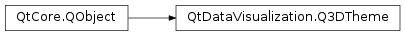

QtDataVisualization.Q3DTheme¶
Synopsis¶
Functions¶
- def
ambientLightStrength() - def
backgroundColor() - def
baseColors() - def
baseGradients() - def
colorStyle() - def
font() - def
gridLineColor() - def
highlightLightStrength() - def
isBackgroundEnabled() - def
isGridEnabled() - def
isLabelBackgroundEnabled() - def
isLabelBorderEnabled() - def
labelBackgroundColor() - def
labelTextColor() - def
lightColor() - def
lightStrength() - def
multiHighlightColor() - def
multiHighlightGradient() - def
setAmbientLightStrength(strength) - def
setBackgroundColor(color) - def
setBackgroundEnabled(enabled) - def
setBaseColors(colors) - def
setBaseGradients(gradients) - def
setColorStyle(style) - def
setFont(font) - def
setGridEnabled(enabled) - def
setGridLineColor(color) - def
setHighlightLightStrength(strength) - def
setLabelBackgroundColor(color) - def
setLabelBackgroundEnabled(enabled) - def
setLabelBorderEnabled(enabled) - def
setLabelTextColor(color) - def
setLightColor(color) - def
setLightStrength(strength) - def
setMultiHighlightColor(color) - def
setMultiHighlightGradient(gradient) - def
setSingleHighlightColor(color) - def
setSingleHighlightGradient(gradient) - def
setType(themeType) - def
setWindowColor(color) - def
singleHighlightColor() - def
singleHighlightGradient() - def
type() - def
windowColor()
Signals¶
- def
ambientLightStrengthChanged(strength) - def
backgroundColorChanged(color) - def
backgroundEnabledChanged(enabled) - def
baseColorsChanged(colors) - def
baseGradientsChanged(gradients) - def
colorStyleChanged(style) - def
fontChanged(font) - def
gridEnabledChanged(enabled) - def
gridLineColorChanged(color) - def
highlightLightStrengthChanged(strength) - def
labelBackgroundColorChanged(color) - def
labelBackgroundEnabledChanged(enabled) - def
labelBorderEnabledChanged(enabled) - def
labelTextColorChanged(color) - def
lightColorChanged(color) - def
lightStrengthChanged(strength) - def
multiHighlightColorChanged(color) - def
multiHighlightGradientChanged(gradient) - def
singleHighlightColorChanged(color) - def
singleHighlightGradientChanged(gradient) - def
typeChanged(themeType) - def
windowColorChanged(color)
Detailed Description¶
-
class
PySide2.QtDataVisualization.QtDataVisualization.Q3DTheme([parent=nullptr])¶ -
class
PySide2.QtDataVisualization.QtDataVisualization.Q3DTheme(themeType[, parent=nullptr]) Parameters: - themeType –
PySide2.QtDataVisualization.QtDataVisualization::Q3DTheme.Theme - parent –
PySide2.QtCore.QObject
- themeType –
-
PySide2.QtDataVisualization.QtDataVisualization.Q3DTheme.ColorStyle¶
-
PySide2.QtDataVisualization.QtDataVisualization.Q3DTheme.Theme¶
-
PySide2.QtDataVisualization.QtDataVisualization.Q3DTheme.ambientLightStrength()¶ Return type: PySide2.QtCore.float
-
PySide2.QtDataVisualization.QtDataVisualization.Q3DTheme.ambientLightStrengthChanged(strength)¶ Parameters: strength – PySide2.QtCore.float
-
PySide2.QtDataVisualization.QtDataVisualization.Q3DTheme.backgroundColor()¶ Return type: PySide2.QtGui.QColor
-
PySide2.QtDataVisualization.QtDataVisualization.Q3DTheme.backgroundColorChanged(color)¶ Parameters: color – PySide2.QtGui.QColor
-
PySide2.QtDataVisualization.QtDataVisualization.Q3DTheme.backgroundEnabledChanged(enabled)¶ Parameters: enabled – PySide2.QtCore.bool
-
PySide2.QtDataVisualization.QtDataVisualization.Q3DTheme.baseColors()¶ Return type:
-
PySide2.QtDataVisualization.QtDataVisualization.Q3DTheme.baseColorsChanged(colors)¶ Parameters: colors –
-
PySide2.QtDataVisualization.QtDataVisualization.Q3DTheme.baseGradients()¶ Return type:
-
PySide2.QtDataVisualization.QtDataVisualization.Q3DTheme.baseGradientsChanged(gradients)¶ Parameters: gradients –
-
PySide2.QtDataVisualization.QtDataVisualization.Q3DTheme.colorStyle()¶ Return type: PySide2.QtDataVisualization.QtDataVisualization::Q3DTheme.ColorStyle
-
PySide2.QtDataVisualization.QtDataVisualization.Q3DTheme.colorStyleChanged(style)¶ Parameters: style – PySide2.QtDataVisualization.QtDataVisualization::Q3DTheme.ColorStyle
-
PySide2.QtDataVisualization.QtDataVisualization.Q3DTheme.font()¶ Return type: PySide2.QtGui.QFont
-
PySide2.QtDataVisualization.QtDataVisualization.Q3DTheme.fontChanged(font)¶ Parameters: font – PySide2.QtGui.QFont
-
PySide2.QtDataVisualization.QtDataVisualization.Q3DTheme.gridEnabledChanged(enabled)¶ Parameters: enabled – PySide2.QtCore.bool
-
PySide2.QtDataVisualization.QtDataVisualization.Q3DTheme.gridLineColor()¶ Return type: PySide2.QtGui.QColor
-
PySide2.QtDataVisualization.QtDataVisualization.Q3DTheme.gridLineColorChanged(color)¶ Parameters: color – PySide2.QtGui.QColor
-
PySide2.QtDataVisualization.QtDataVisualization.Q3DTheme.highlightLightStrength()¶ Return type: PySide2.QtCore.float
-
PySide2.QtDataVisualization.QtDataVisualization.Q3DTheme.highlightLightStrengthChanged(strength)¶ Parameters: strength – PySide2.QtCore.float
-
PySide2.QtDataVisualization.QtDataVisualization.Q3DTheme.isBackgroundEnabled()¶ Return type: PySide2.QtCore.bool
-
PySide2.QtDataVisualization.QtDataVisualization.Q3DTheme.isGridEnabled()¶ Return type: PySide2.QtCore.bool
-
PySide2.QtDataVisualization.QtDataVisualization.Q3DTheme.isLabelBackgroundEnabled()¶ Return type: PySide2.QtCore.bool
-
PySide2.QtDataVisualization.QtDataVisualization.Q3DTheme.isLabelBorderEnabled()¶ Return type: PySide2.QtCore.bool
-
PySide2.QtDataVisualization.QtDataVisualization.Q3DTheme.labelBackgroundColor()¶ Return type: PySide2.QtGui.QColor
-
PySide2.QtDataVisualization.QtDataVisualization.Q3DTheme.labelBackgroundColorChanged(color)¶ Parameters: color – PySide2.QtGui.QColor
-
PySide2.QtDataVisualization.QtDataVisualization.Q3DTheme.labelBackgroundEnabledChanged(enabled)¶ Parameters: enabled – PySide2.QtCore.bool
-
PySide2.QtDataVisualization.QtDataVisualization.Q3DTheme.labelBorderEnabledChanged(enabled)¶ Parameters: enabled – PySide2.QtCore.bool
-
PySide2.QtDataVisualization.QtDataVisualization.Q3DTheme.labelTextColor()¶ Return type: PySide2.QtGui.QColor
-
PySide2.QtDataVisualization.QtDataVisualization.Q3DTheme.labelTextColorChanged(color)¶ Parameters: color – PySide2.QtGui.QColor
-
PySide2.QtDataVisualization.QtDataVisualization.Q3DTheme.lightColor()¶ Return type: PySide2.QtGui.QColor
-
PySide2.QtDataVisualization.QtDataVisualization.Q3DTheme.lightColorChanged(color)¶ Parameters: color – PySide2.QtGui.QColor
-
PySide2.QtDataVisualization.QtDataVisualization.Q3DTheme.lightStrength()¶ Return type: PySide2.QtCore.float
-
PySide2.QtDataVisualization.QtDataVisualization.Q3DTheme.lightStrengthChanged(strength)¶ Parameters: strength – PySide2.QtCore.float
-
PySide2.QtDataVisualization.QtDataVisualization.Q3DTheme.multiHighlightColor()¶ Return type: PySide2.QtGui.QColor
-
PySide2.QtDataVisualization.QtDataVisualization.Q3DTheme.multiHighlightColorChanged(color)¶ Parameters: color – PySide2.QtGui.QColor
-
PySide2.QtDataVisualization.QtDataVisualization.Q3DTheme.multiHighlightGradient()¶ Return type: PySide2.QtGui.QLinearGradient
-
PySide2.QtDataVisualization.QtDataVisualization.Q3DTheme.multiHighlightGradientChanged(gradient)¶ Parameters: gradient – PySide2.QtGui.QLinearGradient
-
PySide2.QtDataVisualization.QtDataVisualization.Q3DTheme.setAmbientLightStrength(strength)¶ Parameters: strength – PySide2.QtCore.float
-
PySide2.QtDataVisualization.QtDataVisualization.Q3DTheme.setBackgroundColor(color)¶ Parameters: color – PySide2.QtGui.QColor
-
PySide2.QtDataVisualization.QtDataVisualization.Q3DTheme.setBackgroundEnabled(enabled)¶ Parameters: enabled – PySide2.QtCore.bool
-
PySide2.QtDataVisualization.QtDataVisualization.Q3DTheme.setBaseColors(colors)¶ Parameters: colors –
-
PySide2.QtDataVisualization.QtDataVisualization.Q3DTheme.setBaseGradients(gradients)¶ Parameters: gradients –
-
PySide2.QtDataVisualization.QtDataVisualization.Q3DTheme.setColorStyle(style)¶ Parameters: style – PySide2.QtDataVisualization.QtDataVisualization::Q3DTheme.ColorStyle
-
PySide2.QtDataVisualization.QtDataVisualization.Q3DTheme.setFont(font)¶ Parameters: font – PySide2.QtGui.QFont
-
PySide2.QtDataVisualization.QtDataVisualization.Q3DTheme.setGridEnabled(enabled)¶ Parameters: enabled – PySide2.QtCore.bool
-
PySide2.QtDataVisualization.QtDataVisualization.Q3DTheme.setGridLineColor(color)¶ Parameters: color – PySide2.QtGui.QColor
-
PySide2.QtDataVisualization.QtDataVisualization.Q3DTheme.setHighlightLightStrength(strength)¶ Parameters: strength – PySide2.QtCore.float
-
PySide2.QtDataVisualization.QtDataVisualization.Q3DTheme.setLabelBackgroundColor(color)¶ Parameters: color – PySide2.QtGui.QColor
-
PySide2.QtDataVisualization.QtDataVisualization.Q3DTheme.setLabelBackgroundEnabled(enabled)¶ Parameters: enabled – PySide2.QtCore.bool
-
PySide2.QtDataVisualization.QtDataVisualization.Q3DTheme.setLabelBorderEnabled(enabled)¶ Parameters: enabled – PySide2.QtCore.bool
-
PySide2.QtDataVisualization.QtDataVisualization.Q3DTheme.setLabelTextColor(color)¶ Parameters: color – PySide2.QtGui.QColor
-
PySide2.QtDataVisualization.QtDataVisualization.Q3DTheme.setLightColor(color)¶ Parameters: color – PySide2.QtGui.QColor
-
PySide2.QtDataVisualization.QtDataVisualization.Q3DTheme.setLightStrength(strength)¶ Parameters: strength – PySide2.QtCore.float
-
PySide2.QtDataVisualization.QtDataVisualization.Q3DTheme.setMultiHighlightColor(color)¶ Parameters: color – PySide2.QtGui.QColor
-
PySide2.QtDataVisualization.QtDataVisualization.Q3DTheme.setMultiHighlightGradient(gradient)¶ Parameters: gradient – PySide2.QtGui.QLinearGradient
-
PySide2.QtDataVisualization.QtDataVisualization.Q3DTheme.setSingleHighlightColor(color)¶ Parameters: color – PySide2.QtGui.QColor
-
PySide2.QtDataVisualization.QtDataVisualization.Q3DTheme.setSingleHighlightGradient(gradient)¶ Parameters: gradient – PySide2.QtGui.QLinearGradient
-
PySide2.QtDataVisualization.QtDataVisualization.Q3DTheme.setType(themeType)¶ Parameters: themeType – PySide2.QtDataVisualization.QtDataVisualization::Q3DTheme.Theme
-
PySide2.QtDataVisualization.QtDataVisualization.Q3DTheme.setWindowColor(color)¶ Parameters: color – PySide2.QtGui.QColor
-
PySide2.QtDataVisualization.QtDataVisualization.Q3DTheme.singleHighlightColor()¶ Return type: PySide2.QtGui.QColor
-
PySide2.QtDataVisualization.QtDataVisualization.Q3DTheme.singleHighlightColorChanged(color)¶ Parameters: color – PySide2.QtGui.QColor
-
PySide2.QtDataVisualization.QtDataVisualization.Q3DTheme.singleHighlightGradient()¶ Return type: PySide2.QtGui.QLinearGradient
-
PySide2.QtDataVisualization.QtDataVisualization.Q3DTheme.singleHighlightGradientChanged(gradient)¶ Parameters: gradient – PySide2.QtGui.QLinearGradient
-
PySide2.QtDataVisualization.QtDataVisualization.Q3DTheme.type()¶ Return type: PySide2.QtDataVisualization.QtDataVisualization::Q3DTheme.Theme
-
PySide2.QtDataVisualization.QtDataVisualization.Q3DTheme.typeChanged(themeType)¶ Parameters: themeType – PySide2.QtDataVisualization.QtDataVisualization::Q3DTheme.Theme
-
PySide2.QtDataVisualization.QtDataVisualization.Q3DTheme.windowColor()¶ Return type: PySide2.QtGui.QColor
-
PySide2.QtDataVisualization.QtDataVisualization.Q3DTheme.windowColorChanged(color)¶ Parameters: color – PySide2.QtGui.QColor
© 2018 The Qt Company Ltd. Documentation contributions included herein are the copyrights of their respective owners. The documentation provided herein is licensed under the terms of the GNU Free Documentation License version 1.3 as published by the Free Software Foundation. Qt and respective logos are trademarks of The Qt Company Ltd. in Finland and/or other countries worldwide. All other trademarks are property of their respective owners.